Regression comparison
Download resultsAggregation weights
\widehat y(x)=y_{\rm mean}+y_{\rm std}\sum_{h=1}^{H}\beta_h\mu_h(x)Coefficients can be negative and need not sum to one. Intervals describe coefficient uncertainty; the dashed reference is DE’s fixed 1/H weight.
BDKN

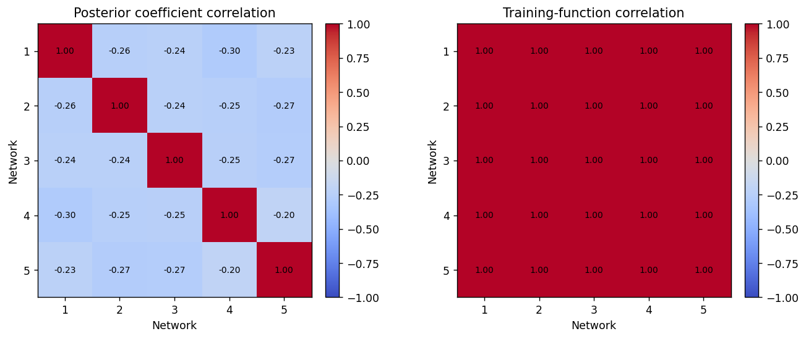


Each density panel uses its own X range for readability; coefficient intervals above share a common axis. Prior reference conditions on fitted noise. Contribution shares use held-out inputs; test targets are used only for scoring.
| Network | β mean | 95% low | 95% high | P(β > 0) | Contribution share | Test RMSE | Test NLL |
|---|---|---|---|---|---|---|---|
| 1 | 0.22455 | -0.37810 | 0.82721 | 0.82033 | 0.23201 | 0.18210 | 804.83344 |
| 2 | 0.19524 | -0.41183 | 0.80230 | 0.78882 | 0.25037 | 0.19040 | 1165.62672 |
| 3 | 0.19074 | -0.40289 | 0.78436 | 0.78862 | 0.11231 | 0.18708 | 295.28098 |
| 4 | 0.24410 | -0.34753 | 0.83573 | 0.84207 | 0.22744 | 0.17958 | 1034.70615 |
| 5 | 0.14857 | -0.43568 | 0.73282 | 0.74044 | 0.17788 | 0.18625 | 714.88349 |
Functional repulsion · BDKN
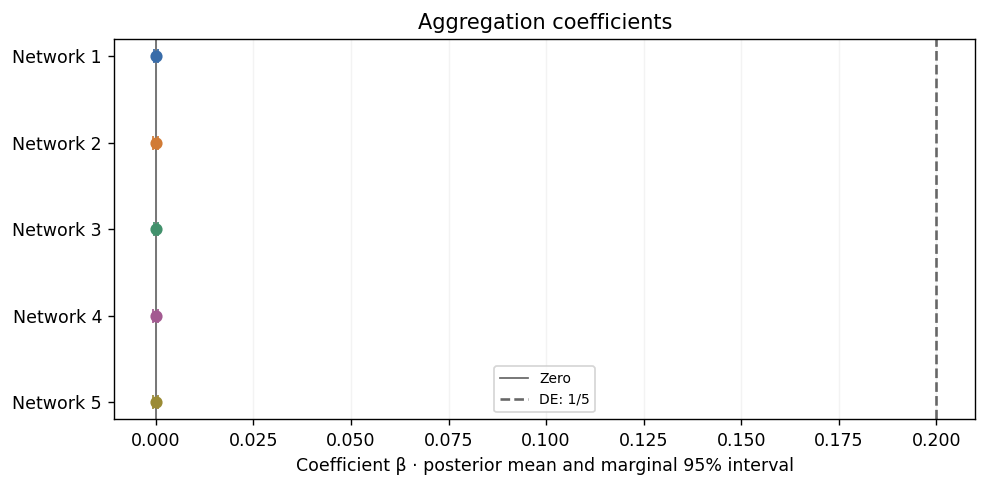
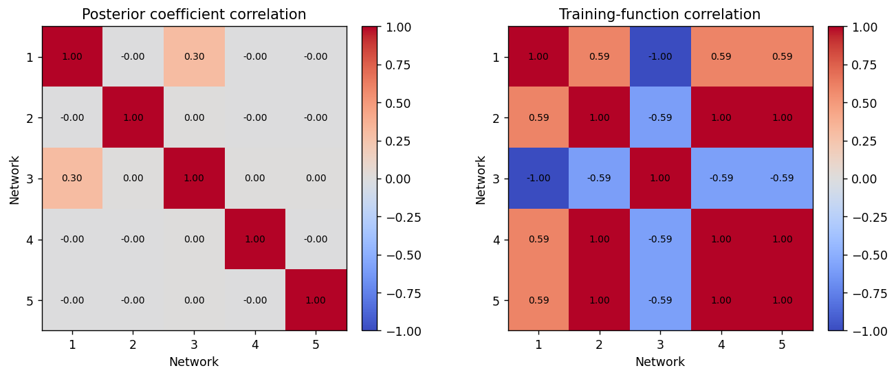
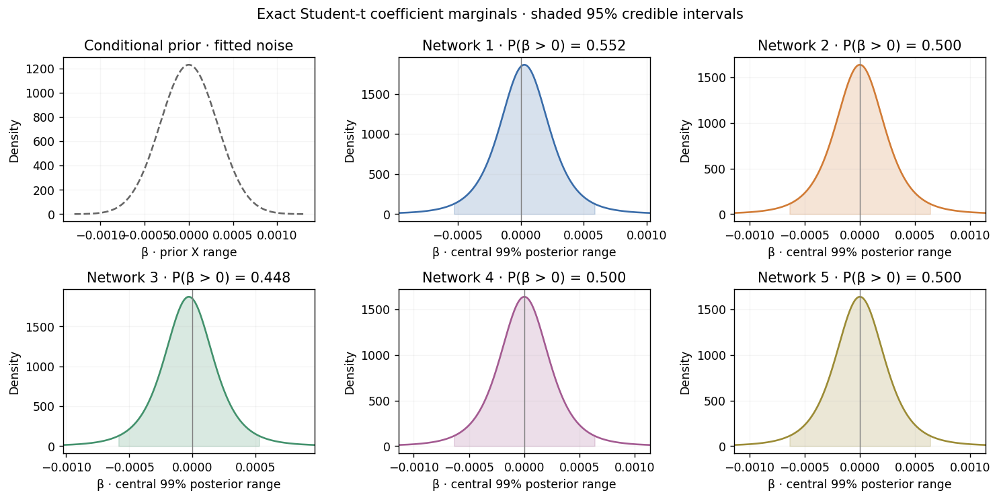
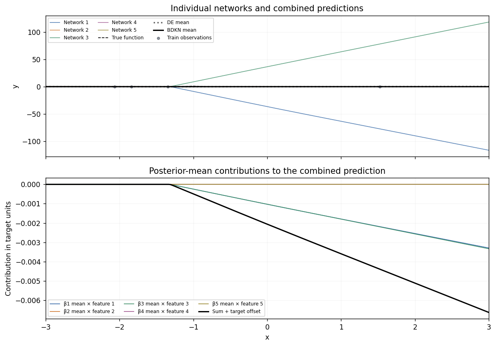
Each density panel uses its own X range for readability; coefficient intervals above share a common axis. Prior reference conditions on fitted noise. Contribution shares use held-out inputs; test targets are used only for scoring.
| Network | β mean | 95% low | 95% high | P(β > 0) | Contribution share | Test RMSE | Test NLL |
|---|---|---|---|---|---|---|---|
| 1 | 0.00003 | -0.00053 | 0.00059 | 0.55248 | 0.49832 | 59.12276 | 520.48522 |
| 2 | 0.00000 | -0.00064 | 0.00064 | 0.50034 | 0.00000 | 0.18270 | 784.38417 |
| 3 | -0.00003 | -0.00058 | 0.00053 | 0.44755 | 0.50166 | 59.82062 | 354.53368 |
| 4 | 0.00000 | -0.00064 | 0.00064 | 0.50034 | 0.00000 | 0.18213 | 1151.90023 |
| 5 | 0.00000 | -0.00064 | 0.00064 | 0.50034 | 0.00000 | 0.18393 | 1121.68132 |
Weight repulsion · BDKN

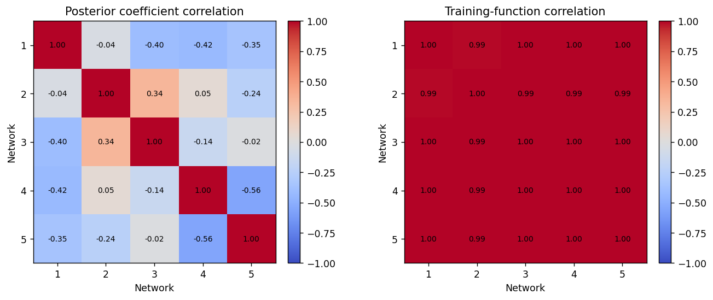

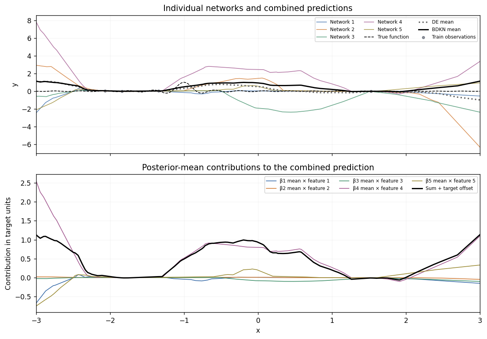
Each density panel uses its own X range for readability; coefficient intervals above share a common axis. Prior reference conditions on fitted noise. Contribution shares use held-out inputs; test targets are used only for scoring.
| Network | β mean | 95% low | 95% high | P(β > 0) | Contribution share | Test RMSE | Test NLL |
|---|---|---|---|---|---|---|---|
| 1 | 0.27454 | -0.36333 | 0.91241 | 0.85095 | 0.06788 | 0.39652 | 14037.40176 |
| 2 | 0.00726 | -0.02398 | 0.03851 | 0.72305 | 0.00941 | 1.50800 | 390140.56397 |
| 3 | 0.04229 | -0.32824 | 0.41282 | 0.61641 | 0.05387 | 1.18061 | 2825.47342 |
| 4 | 0.32602 | -0.33001 | 0.98205 | 0.88012 | 0.71569 | 2.01908 | 835.95691 |
| 5 | 0.35504 | -0.24306 | 0.95315 | 0.91267 | 0.15315 | 0.49903 | 35075.06862 |
First-order repulsion · BDKN
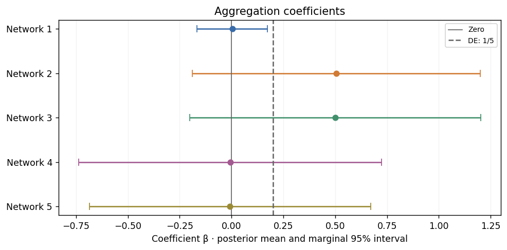
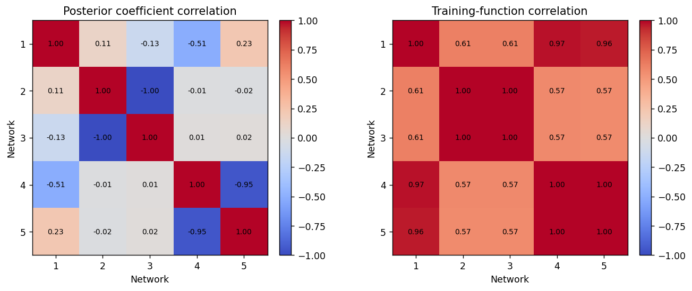
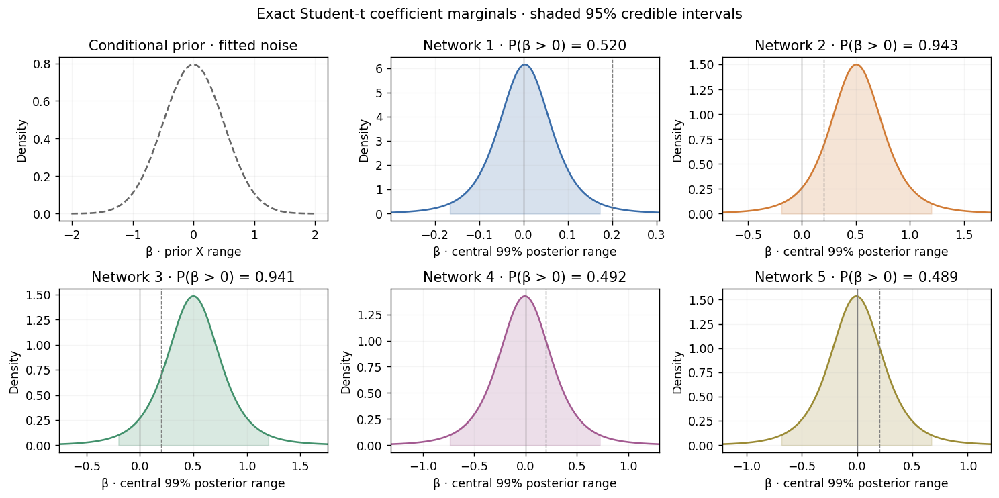
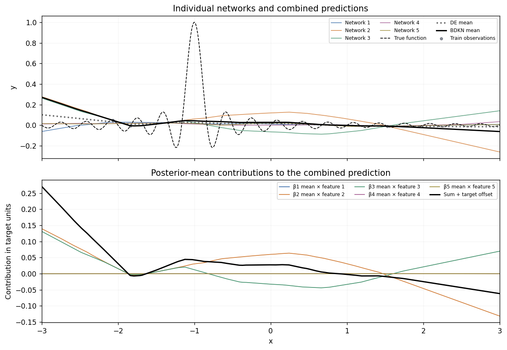
Each density panel uses its own X range for readability; coefficient intervals above share a common axis. Prior reference conditions on fitted noise. Contribution shares use held-out inputs; test targets are used only for scoring.
| Network | β mean | 95% low | 95% high | P(β > 0) | Contribution share | Test RMSE | Test NLL |
|---|---|---|---|---|---|---|---|
| 1 | 0.00328 | -0.16580 | 0.17237 | 0.52021 | 0.00051 | 0.17314 | 117.75252 |
| 2 | 0.50470 | -0.18944 | 1.19884 | 0.94317 | 0.60244 | 0.20280 | 578.56540 |
| 3 | 0.49987 | -0.20147 | 1.20122 | 0.94052 | 0.39543 | 0.19048 | 946.61820 |
| 4 | -0.00585 | -0.73632 | 0.72463 | 0.49167 | 0.00067 | 0.17371 | 76.46124 |
| 5 | -0.00708 | -0.68503 | 0.67087 | 0.48913 | 0.00095 | 0.17299 | 108.57337 |